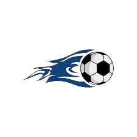

- time
- flamengo e corinthians
esse site foi criado por adrian e ricardo nos decidimos criar este site para falar ou citar sobre os jogos do flamengo e corinthians ou dar varios palpites sobre os jogos que ocorreram durante o ano de 2024.neste site nos vamos citar sobre as duas maiores torcidas do brasil que no caso são o time do flamengo e do corinthians.o flamengo foi fundado em 17 de novembro de 1895 para as disputas de remo.em 1910 foi criado o time sport club corinthians
